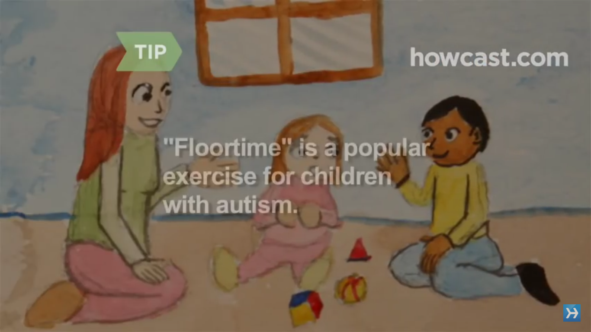

Videos on
Autisim
ABA Autism Training - Chapter 1 - The Discret Trial
ABA Autism Training - Chapter 2 - Reinforcement
ABA Autism Training - Chapter 4 - Generalization
ABA Autism Training - Chapter 5 - Incidental Teaching
Easy to Use Calming Strategies for Autism
How to handle an autism tantrum

How to help a child with autism
Types of autism therapy
Toilet training your child with autism
How to get your child with autism to talk
How to get toddlers to sit and read with you: Tips from a speech therapist
Touch-based Treatment for Autism
Teaching children with autism to talk
How to speak too an autistic child
What it’s like to be autistic, according to people with autism
Ask an autistic #5 - What is ABA therapy?
Ask an Autistic #1 - What is Stimming?
What is Autism? Do you know the signs?
Ask an autistic #9 - What is sensory processing disorder?
7 early signs of autism
Early signs of autism video tutorial - Kennedy Krieger Institute
What it’s like to have a brother with autism
ABA therapy: the first sessions of therapy
Is ABA therapy child abuse? | Stim suppression | Am I wrong? | Fathering autism vlog
Ask an Autistic #14 - What are Some Good Therapies for Autistic Children?
Ask an autistic #15 - What are autistic meltdowns?
Coping with autism and puberty
Ask an autistic #17 - Biomedical interventions for autism
Ask an Autistic #21 - What About Eye Contact?
Ask an Autistic #12 - What Shouldn't I Say to Autistic People?
Ask an Autistic #18 - What is Echolalia?
Ask an Autistic #7 - What is Scripting?
Ask an Autistic #2 - What is Passing?
2017 © Autsi Inc.
Privacy & Terms